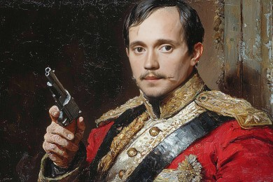

— Скажи-ка, дядя, ведь не даром
Москва, спаленная пожаром,
Французу отдана?
Ведь были ж схватки боевые,
Да, говорят, еще какие!
Недаром помнит вся Россия
Про день Бородина!
— Да, были люди в наше время,
Не то, что нынешнее племя:
Богатыри — не вы!
Плохая им досталась доля:
Немногие вернулись с поля…
Не будь на то господня воля,
Не отдали б Москвы!
Мы долго молча отступали,
Досадно было, боя ждали,
Ворчали старики:
«Что ж мы? на зимние квартиры?
Не смеют, что ли, командиры
Чужие изорвать мундиры
О русские штыки?»
И вот нашли большое поле:
Есть разгуляться где на воле!
Построили редут.
У наших ушки на макушке!
Чуть утро осветило пушки
И леса синие верхушки —
Французы тут как тут.